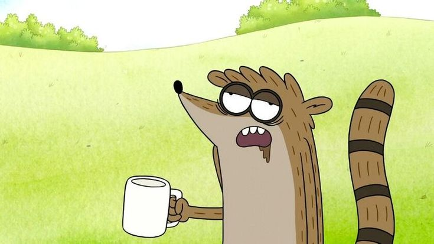

23-летний самец Носухи, главный герой мультсериала, лучший друг Мордекая. Часто конфликтует с ним. Мордекай зачастую спасает друга, но были и моменты, когда и Ригби помогал другу в беде. Он плохо дерётся, не держит удар и плохо играет в видеоигры (однако в серии «Эксперт или лжец» отлично играет и становится экспертом по ним). У него есть младший брат по имени Дон, к которому Ригби постоянно ревнует из-за того, что Дон намного выше, красивее, сильнее и из-за того, что он всегда в тени у Дона. За четыре сезона Ригби умирал четыре раза, но каждый раз воскресал (однажды его убил Скипс, а в другом эпизоде его убил сам Мордекай). Страдает аллергией на куриные яйца. В отличие от своего младшего брата Дона, Ригби ненавидит обниматься. В 33-й серии третьего сезона признаётся, что ему нравится Эйлин, когда она без очков. В серии «Эксперт или лжец» побеждает в одном из телешоу (участвуя в нём во второй раз), заявив, что «хочет отомстить за всех, кто был унижен в гнусных телешоу» (включая Бенсона, который был унижен в телешоу «Скажи это слово»). После событий одной из серий является чемпионом мира по игре «Костолом» вместе с Мордекаем. На свадьбе Масл Мена признаётся в том, что встречается с Эйлин. В конце 8-го сезона они женятся.